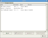
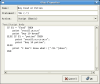

Alias Definition
Aliases allow you to define shortcuts for simple commands. For example, you can define df to be an alias
to
drink from
fountain, and then you can type only df in the command line, and drink from fountain will be
sent
to the mud.
For speedwalk commands, you could input a single word such as RecallToThorn which will output the walk pattern to the
destination you are attempting to get to.
All alias events use PCRE (perl compatible regular expression). What this means, is if you create an alias called just:
test, then if you input anything on the command line that contains the word "test" in it, the alias will
trigger. For example, the following This isatest would trigger an alias with a Statement setting of "test".
Thus, make sure to check your PCRE settings. What you want to use for just a 'test' input statement would actually be:
^test. Since the Statement trigger is PCRE based, you can pass arguments through to a back end script - or just
output plain text for the simpler aliases.
Single alias argument using TEXT output:
Alias: ^bb
TEXT command:
buy 10 bread
|
The above alias will cause the program to send: "buy 10 bread", whenever you type in: bb
Regular Expression alias argument using BASIC output:
Alias: ^bb (.*)
BASIC command:
IF $1 = "food" THEN
print "recall;n;n;n"
print "buy 10 bread"
ELSE IF $1 = "potion" THEN
print "recall;s;s;s;w;s";
print "buy 10 potion";
ELSE
print "I don't know what: [".$1."]does";
END
|

1. Action Window
|

2. Property Window
|
Alias Editing
To edit an alias, you fill out the alias Name, the triggering Statement and select
the command execution type: Python script, BASIC script, or plain text output.
For example. To go from
Recall to the location Thorn, a user will travel: west, south, south, south, east, open door, east . To create an
Alias that does all this for us, we go to our Alias editor and input:
Name : Thorn
Statement : RecallToThorn
Action : Text
west;south;south;south;east;open door;east
|
And that's it. This above script assumes that you have set your command seperator argument to ';'. You can set your
command argument seperator by visiting Settings -> Global Settings -> Strings and input the character: ; in the entry
field.
The Alias: is either a basic input entry: MyAlias or a regular expression: ^Myalias (.*) (.*)
NOTE!:
The '^' before an alias name ensures that your alias name STARTS WITH the letter you input on the command entry. Or
else if you have
an alias such as:
test
rather than
^test
Every time you enter in a sentence with the word 'test' in it, the alias would trigger. For more help on using regular
expressions, visit: http://perldoc.perl.org/perlre.html
Scope of Aliases
There are two different places you can access an ALIAS. Either globally in the: Settings -> Global Settings ->
Actions -> Alias for global alias access that will work on any game you log into. Or you can create game
specific aliases by logging into a game, and then selecting Profile -> Actions -> Alias.
Alias can be ENABLED/DISABLED as needed in either locations. Aliases are also importable and exportable to your
mudmagic login with the import/export feature located in Tools -> Remote Storage.
Scripting Support
Aliases can use Python, MudMagic BASIC scripting language or Plain Text output.
For more details on scripting visit the SCRIPTING link to the left.
Alias Examples
Aliases are simple direct command line replacements. With the use of Perl PCRE, you can pass arguments to the MudMagic
command interpreter to perform some BASIC script support if desired.
Example TEXT 1:
Name: Dathlin to Baghanny Bay
Alias: DathlintoBaghannyBay
command:
w;w;w;w;w;w;w;w;w;n;n;w;w;w;se;se;se;s;s;s
|
The above example is a speed-walk alias that will take you from a location called Dathlin to a location called
Baghanny Bay. ( for KoTl players - this is a working alias =)
Extended BASIC Script Example:
Name: Buy <#> -
Alias: ^buy (\d*) (.*)
command: BASIC
REM : store how many items we want in a variable
TOTAL_ITEMS = $1
REM : store what we are buying in a variable
ITEM = $2
IF TOTAL_ITEMS > 10
THEN
$MESSAGEBOX "Trying to buy too much"
ELSE
IF ITEM = "bread" THEN
send "recall;s;s;s;w;n";
send "buy $1 $2"
ELSE
IF ITEM = "strength" THEN
print "recall;s;s;s;e;n";
print "buy $1 $2";
ELSE
print "I don't know where to find $2"
END
END
END
|
The example above does something different based on what you input.
If you input buy 11 bread
-A popup window will state: Trying to buy too much
If you input: buy 5 bread
-The script will execute for the: ITEM = "bread" line
If you input: buy 5 strength
-The script will execute for the; ITEM = "strength" line
If you input buy 5 tomatoes
-You will see on the client "I don't know where to find tomatoes"
Copyright ©
2004-02-26 MudMagic.Com
{kind=link}
{kind=link}